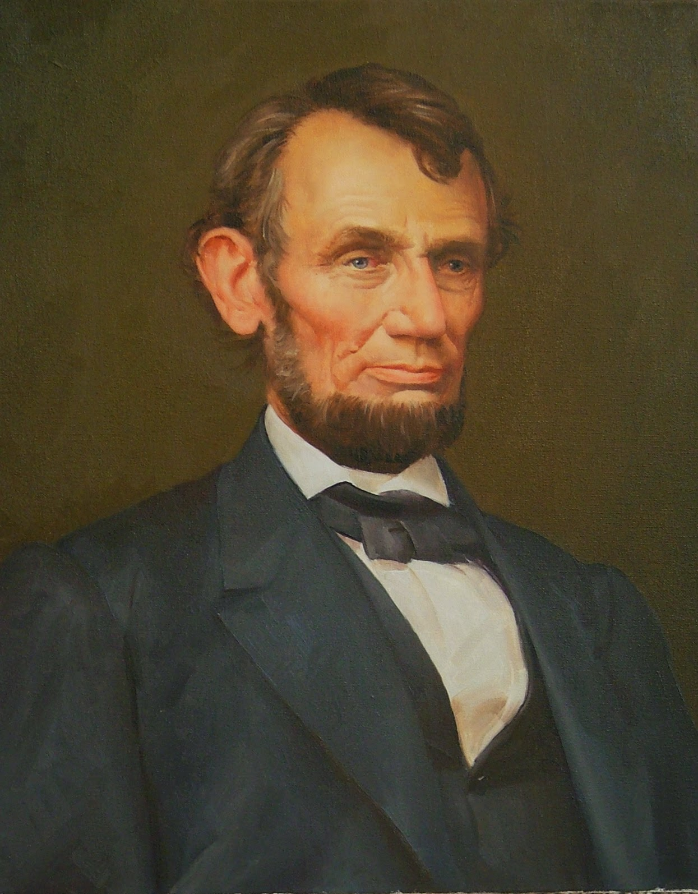
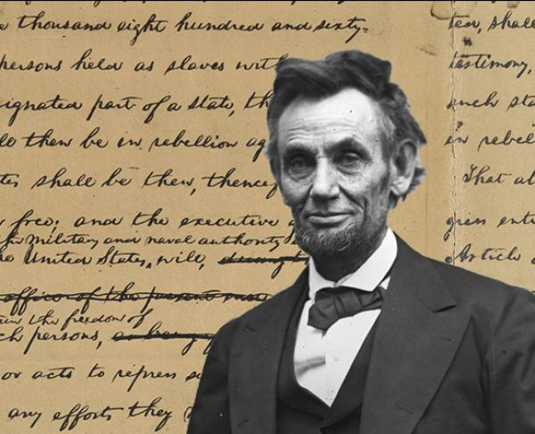
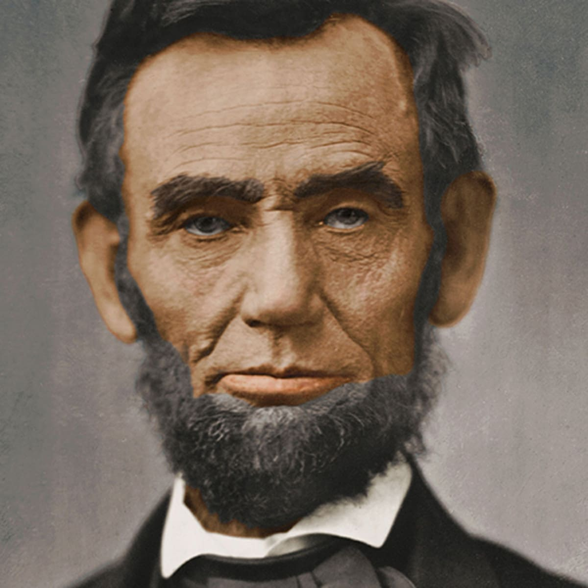
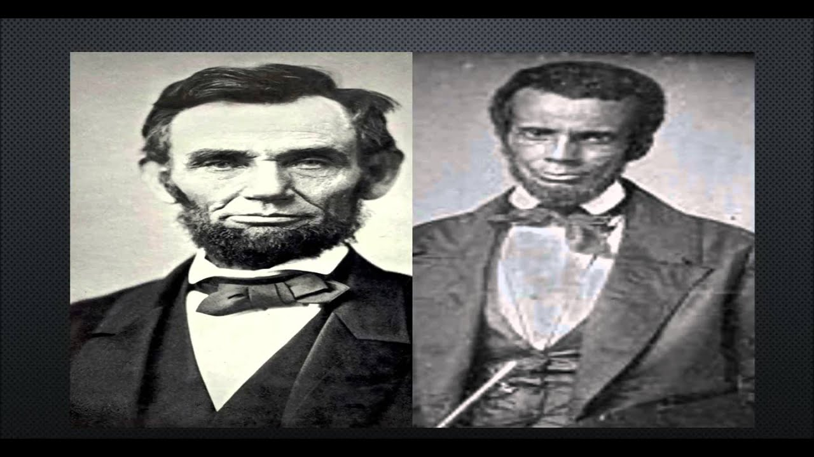
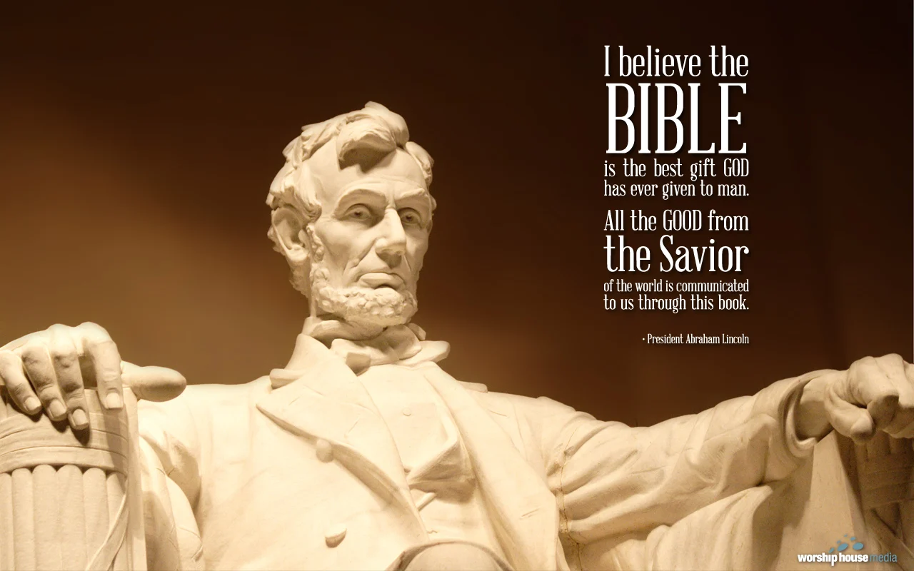
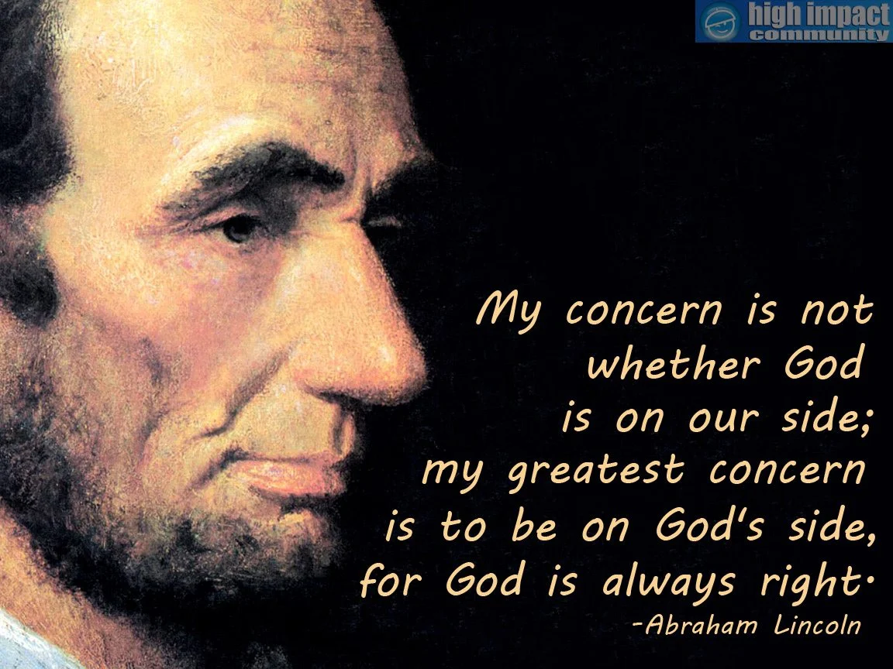
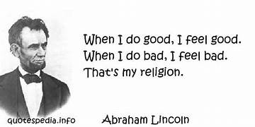
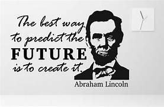

WELCOME TO THIS PAGE!
America's 16th President





History
Abraham Lincoln (/ˈlɪŋkən/ LINK-ən; February 12, 1809 – April 15, 1865) was an American lawyer, politician,
and statesman who served as the 16th president of the United States from 1861 until his assassination in
1865. Lincoln led the Union through the American Civil War to defend the nation as a constitutional union
and succeeded in abolishing slavery, bolstering the federal government, and modernizing the U.S economy.
Lincoln was born into poverty in a log cabin in Kentucky and was raised on the frontier, primarily in
Indiana. He was self-educated and became a lawyer, Whig Party leader, Illinois state legislator, and U.S.
congressman from Illinois. In 1849, he returned to his successful law practice in Springfield, Illinois. In
1854, he was angered by the Kansas–Nebraska Act, which opened the territories to slavery, and he re-entered
politics. He soon became a leader of the new Republican Party. He reached a national audience in the 1858
Senate campaign debates against Stephen A. Douglas. Lincoln ran for president in 1860, sweeping the North to
gain victory. Pro-slavery elements in the South viewed his election as a threat to slavery, and Southern
states began seceding from the nation. During this time, the newly formed Confederate States of America
began seizing federal military bases in the south. Just over one month after Lincoln assumed the presidency,
the Confederate States attacked Fort Sumter, a U.S. fort in South Carolina. Following the bombardment,
Lincoln mobilized forces to suppress the rebellion and restore the union.
Lincoln, a moderate Republican, had to navigate a contentious array of factions with friends and opponents
from both the Democratic and Republican parties. His allies, the War Democrats and the Radical Republicans
demanded harsh treatment of the Southern Confederates. Anti-war Democrats (called "Copperheads") despised
Lincoln, and irreconcilable pro-Confederate elements plotted his assassination. He managed the factions by
exploiting their mutual enmity, carefully distributing political patronage, and by appealing to the American
people. His Gettysburg Address came to be seen as one of the greatest and most influential statements of
American national purpose. Lincoln closely supervised the strategy and tactics in the war effort, including
the selection of generals, and implemented a naval blockade of the South's trade. He suspended habeas corpus
in Maryland and elsewhere, and averted British intervention by defusing the Trent Affair. In 1863, he issued
the Emancipation Proclamation, which declared the slaves in the states "in rebellion" to be free. It also
directed the Army and Navy to "recognize and maintain the freedom of such persons" and to receive them "into
the armed service of the United States." Lincoln also pressured border states to outlaw slavery, and he
promoted the Thirteenth Amendment to the U.S. Constitution, which upon its ratification abolished slavery,
except as punishment for a crime.
Lincoln managed his own successful re-election campaign. He sought to heal the war-torn nation through
reconciliation. On April 14, 1865, just five days after the war's end at Appomattox, he was attending a play
at Ford's Theatre in Washington, D.C., with his wife, Mary, when he was fatally shot by Confederate
sympathizer John Wilkes Booth. Lincoln is remembered as a martyr and a national hero for his wartime
leadership and for his efforts to preserve the Union and abolish slavery. Lincoln is often ranked in both
popular and scholarly polls as the greatest president in American history.
Early Life
Abraham Lincoln was born on February 12, 1809, the second child of Thomas Lincoln and Nancy Hanks Lincoln,
in a log cabin on Sinking Spring Farm near Hodgenville, Kentucky. He was a descendant of Samuel Lincoln, an
Englishman who migrated from Hingham, Norfolk, to its namesake, Hingham, Massachusetts, in 1638. The family
then migrated west, passing through New Jersey, Pennsylvania, and Virginia. Lincoln was also a descendant of
the Harrison family of Virginia; his paternal grandfather and namesake, Captain Abraham Lincoln and wife
Bathsheba (née Herring) moved the family from Virginia to Jefferson County, Kentucky. The captain was killed
in an Indian raid in 1786. His children, including eight-year-old Thomas, Abraham's father, witnessed the
attack. Thomas then worked at odd jobs in Kentucky and Tennessee before the family settled in Hardin County,
Kentucky, in the early 1800s.
Lincoln's mother Nancy Lincoln is widely assumed to be the daughter of Lucy Hanks. Thomas and Nancy married
on June 12, 1806, in Washington County, and moved to Elizabethtown, Kentucky. They had three children:
Sarah, Abraham, and Thomas, who died as an infant.
Thomas Lincoln bought or leased farms in Kentucky before losing all but 200 acres (81 ha) of his land in
court disputes over property titles. In 1816, the family moved to Indiana where the land surveys and titles
were more reliable. Indiana was a "free" (non-slaveholding) territory, and they settled in an "unbroken
forest" in Hurricane Township, Perry County, Indiana. In 1860, Lincoln noted that the family's move to
Indiana was "partly on account of slavery", but mainly due to land title difficulties.
The farm site where Lincoln grew up in Spencer County, Indiana In Kentucky and Indiana, Thomas worked as a
farmer, cabinetmaker, and carpenter. At various times, he owned farms, livestock, and town lots, paid taxes,
sat on juries, appraised estates, and served on county patrols. Thomas and Nancy were members of a Separate
Baptists church, which forbade alcohol, dancing, and slavery.
Overcoming financial challenges, Thomas in 1827 obtained clear title to 80 acres (32 ha) in Indiana, an area
which became the Little Pigeon Creek Community.
Personal Details
| Born |
February 12, 1809
Sinking Spring Farm,
Kentucky, U.S. |
| Died |
April 15, 1865
(aged 56)
Washington, D.C. U.S. |
| Parents |
Thomas Lincoln
Nancy Hanks |
| Children |
Robert
Edward
Willie
Tad |
| Occupation |
Politician
lawyer |
| Spouse |
Mary Todd (m. 1842) |
| Manner of death |
Assassination (gunshot wound to the head)
|
Education
Lincoln was largely self-educated. His formal schooling was from itinerant teachers. It included two short
stints in Kentucky, where he learned to read but probably not to write, at age seven, and in Indiana, where
he went to school sporadically due to farm chores, for a total of fewer than 12 months in aggregate by the
age
of 15. He persisted as an avid reader and retained a lifelong interest in learning. Family, neighbors,
and schoolmates recalled that his reading included the King James Bible, Aesop's Fables, John Bunyan's The
Pilgrim's Progress, Daniel Defoe's Robinson Crusoe, and The Autobiography of Benjamin Franklin.
New Salem, Illinois
As a teen, Lincoln took responsibility for chores and customarily gave his father all earnings from work
outside
the home until he was 21. Lincoln was tall, strong, and athletic, and became adept at using an ax. He
was an active wrestler during his youth and trained in the rough catch-as-catch-can style (also known as
catch
wrestling). He became county wrestling champion at the age of 21. He gained a reputation for strength and
audacity after winning a wrestling match with the renowned leader of ruffians known as "the Clary's Grove
Boys".
In March 1830, fearing another milk sickness outbreak, several members of the extended Lincoln family,
including
Abraham, moved west to Illinois, a free state, and settled in Macon County. Abraham then became
increasingly distant from Thomas, in part due to his father's lack of education. In 1831, as Thomas and
other family prepared to move to a new homestead in Coles County, Illinois, Abraham struck out on his own.
He made his home in New Salem, Illinois, for six years. Lincoln and some friends took goods by flatboat to
New Orleans, Louisiana, where he was first exposed to slavery.
Quotes
- “Whatever you are, be a good one.”
- “My concern is not whether God is on our side; my greatest concern is to be on God's side, for God
is
always right.”
- “Do I not destroy my enemies when I make them my friends?”
- “I can see how it might be possible for a man to look down upon the earth and be an atheist, but I
cannot conceive how a man could look up into the heavens and say there is no God.”
- “Be sure you put your feet in the right place, then stand firm.”
Pre-Presidential Political Career 1830-1860
Lincoln spent 6 important years in New Salem. Defeated for office, he turned to storekeeping, then was
appointed
postmaster, became a surveyor, and plunged into law studies. In 1834 he was elected to the legislature as a
Whig, where he denounced slavery as "founded on both injustice and bad policy" but opposed the spread of
abolition societies. Three Years later Lincoln moved to Springfield, the new State capital. Licensed an
attorney
the year before, he formed a partnership with the able John T. Stuart and soon dipped into local politics.
After
marrying Mary Todd, a Kentucky belle, in 1842, he settled down in earnest to the law.
From 1847-49 Lincoln served in Congress. He worked hard in office, but his opposition to the Mexican War
proved
notably unpopular back home, and he was passed over for renomination. Sadly he returned to Springfield, and
resumed his law practice. Honest, shrewd, and effective before juries, he soon rose to the first rank of the
Illinois bar.
Over the next 5 years Lincoln devoted much time to studying the issue of slavery. Roused by the repeal of
the
Missouri Compromise, he emerged from political retirement to grapple with Stephen A. Douglas, who advocated
in
Congress doctrines that would allow the introduction of slavery into the western territories. Their first
skirmish came in 1854. Arguing that slavery should be restrained to its present domain, Lincoln marshaled
history and logic to counter Douglas' theory of "popular sovereignty." It was the first great speech of his
career. Two years later, another address, this time to a State Convention of the new Republican party, again
brought him wide attention. He was now enough of a national figure to be seriously considered for the
Republican
vice-presidential nomination In 1858 Lincoln challenged Douglas for his Senate seat. For 3 months they
ranged
Illinois debating the issue of freedom in the territories. Lincoln exposed the inconsistencies in Douglas'
arguments, while disavowing abolitionism himself. Douglas won the election, but the contest lifted the tall
prairie lawyer once more
Early in 1860 Lincoln journeyed east to lecture in New York City. He called for the exclusion of slavery
from
the territories, deplored efforts to destroy the Union, and urged friendship toward the South. The speech
was a
triumph, and the number of his supporters grew. When his rivals proved weak in the national convention,
Lincoln
was nominated for the Presidency on the third ballot.
From his doorstep in Springfield Lincoln ran a quiet campaign, receiving delegations and political leaders
while
avoiding speeches and stumping. In November 1860 the Nation voted. Lincoln won a large electoral majority
(180
votes to 123 for his three opponents), but he polled less than half of the popular vote. The South voted
almost
solidly against him.




Religious views of Abraham Lincoln
Abraham Lincoln grew up in a highly religious Baptist family. He never joined any Church, and was a skeptic
as a young man and sometimes ridiculed revivalists. He frequently referred to God and had a deep
knowledge of the Bible, often quoting it. Lincoln attended Protestant church services with his wife and
children. "Especially after the death of his young son Willie in 1862, Lincoln moved away from his earlier
religious skepticism."Some argue that Lincoln was neither a Christian believer nor a secular
freethinker.
Although Lincoln never made an unambiguous public profession of Christian belief, several people who knew
him personally, such as Chaplain of the Senate Phineas Gurley and Mary Todd Lincoln, claimed that he
believed in Christ in the religious sense. However, others who had known Lincoln for years, such as
Ward Hill Lamon and William Herndon, rejected the idea that he was a believing Christian. During his 1846
run for the House of Representatives, in order to dispel accusations concerning his religious beliefs,
Lincoln issued a handbill stating that he had "never denied the truth of the Scriptures". He seemed to
believe in an all-powerful God, who shaped events and, by 1865, was expressing those beliefs in major
speeches.
Lincoln's Death
On the evening of April 14, conspirator Lewis T. Powell burst into Secretary of State Seward’s home,
seriously
wounding him and three others, while George A. Atzerodt, assigned to Vice President Johnson, lost his nerve
and
fled. Meanwhile, just after 10 p.m., Booth entered Lincoln’s private box unnoticed and shot the president
with a
single bullet in the back of his head. Slashing an army officer who rushed at him, Booth jumped to the stage
and
shouted “Sic semper tyrannis! [Thus always to tyrants]–the South is avenged!” Although Booth had broken his
left
leg jumping from Lincoln’s box, he succeeded in escaping Washington.
The president, mortally wounded, was carried to a cheap lodging house opposite Ford’s Theater. An hour after
dawn the next morning, Abraham Lincoln died, becoming the first president to be assassinated. His body was
taken
to the White House, where it lay until April 18, at which point it was carried to the Capitol rotunda to lay
in
state on a catafalque. On April 21, Lincoln’s body was taken to the railroad station and boarded on a train
that
conveyed it to Springfield, Illinois, his home before becoming president. Tens of thousands of Americans
lined
the train’s railroad route and paid their respects to their fallen leader during the train’s solemn
progression
through the North. Lincoln was buried on May 4, 1865, at Oak Ridge Cemetery, near Springfield.
Booth, pursued by the army and security forces, was finally cornered in a barn near Bowling Green, Virginia,
and
died from a bullet wound as the barn was burned to the ground. Of the eight other persons eventually charged
with the conspiracy, four were hanged.
Thank You